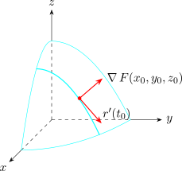

2.6 Tangent Planes To Level Surfaces
Suppose \(S\) is a surface with equation \(F(x,y,z) = k\), a level surface of a function \(F\) of three variables, and \(P(x_0,y_0,z_0)\) is a point of \(S\). Let \(C\) be any curve that lies on \(S\) and passes through \(P\), described by a differentiable vector function \(\mathbf r(t) = \langle x(t), y(t), z(t)\rangle \) with \(\mathbf r(t_0) = \langle x_0,y_0,z_0\rangle \). Since \(C\) lies on \(S\), \[F(x(t), y(t), z(t)) = k\quad \text {for all } t ,\] and differentiating with the chain rule, \[\frac {\partial F}{\partial x}\frac {dx}{dt} + \frac {\partial F}{\partial y}\frac {dy}{dt} +\frac {\partial F}{\partial z}\frac {dz}{dt} = 0,\qquad \text {that is}\qquad \nabla F \cdot \mathbf r'(t) =0 .\] In particular, at \(t = t_0\), \[\nabla F(x_0, y_0,z_0)\cdot \mathbf r'(t_0) = 0 .\] So the gradient at \(P\) is perpendicular to the tangent vector of every curve in \(S\) through \(P\).

If \(\nabla F(x_0, y_0, z_0) \neq \mathbf 0\), the tangent plane to the level surface \(F(x,y,z) = k\) at \(P\) is defined as the plane through \(P\) with normal vector \(\nabla F(x_0, y_0, z_0)\): \[F_x(x_0, y_0, z_0)(x -x_0) + F_y(x_0, y_0, z_0)(y -y_0) + F_z(x_0, y_0, z_0)(z -z_0) = 0 .\] The normal line to \(S\) at \(P\) is the line through \(P\) in the direction of \(\nabla F(x_0,y_0,z_0)\), with symmetric equations \[ \frac {x - x_0}{F_x (x_0, y_0, z_0)} = \frac {y - y_0}{F_y (x_0, y_0, z_0)} = \frac {z - z_0}{F_z (x_0, y_0, z_0)} ,\] provided the three partial derivatives are non-zero. A graph \(z = f(x,y)\) is the level surface \(F = f(x,y) - z = 0\), and with \(\nabla F = \langle f_x, f_y, -1\rangle \) this recovers the tangent plane of the subsection on tangent planes.
Example 2.6.1. Find the equation of the tangent plane and normal line at the point \((-2,1,-3)\) to the ellipsoid \[\frac {x^2}{4} + y^2 + \frac {z^2}{9} =3 .\]
Solution. Let \(F = \frac {x^2}{4} + y^2 + \frac {z^2}{9}\). Then \[\nabla F = \left \langle \frac {x}{2}, 2y, \frac {2z}{9}\right \rangle ,\qquad \nabla F(-2,1,-3) = \left \langle -1, 2, -\frac {2}{3}\right \rangle .\] The tangent plane is \[-(x+2) + 2(y-1) -\frac {2}{3}(z + 3) = 0,\qquad \text {that is}\qquad 3x - 6y + 2z + 18 = 0 ,\] and the normal line has symmetric equations \[\frac {x + 2}{-1} = \frac {y - 1}{2} = \frac {z + 3}{-2/3} .\]
Example 2.6.2. Show that every sphere centred at the origin meets the cone \(z^2 = x^2 + y^2\) at right angles.
Solution. Two surfaces meet at right angles at a common point when their normals there are perpendicular. The sphere \(x^2 + y^2 + z^2 = a^2\) has normal \(\langle 2x, 2y, 2z\rangle \), and the cone \(x^2 + y^2 - z^2 = 0\) has normal \(\langle 2x, 2y, -2z\rangle \). Their dot product is \[4(x^2 + y^2 - z^2) = 0\] at every point of the cone. So at every point where the sphere and the cone meet (apart from the vertex, where the cone has no tangent plane), the surfaces are perpendicular. In spherical coordinates this is clear: the sphere is \(\rho = a\) and the cone is \(\phi = \frac {\pi }{4}\), coordinate surfaces of an orthogonal system.
Example 2.6.3. Find the points on the hyperboloid \(x^2 - 2y^2 - 4z^2 = 16\) at which the tangent plane is parallel to the plane \(4x - 2y + 4z = 5\).
Solution. The normal \(\nabla F = \langle 2x, -4y, -8z\rangle \) must be a multiple of \(\langle 4,-2,4\rangle \): \(2x = 4t\), \(-4y = -2t\), \(-8z = 4t\), so \(x = 2t\), \(y = \frac {t}{2}\), \(z = -\frac {t}{2}\). Substituting into the equation, \(4t^2 - \frac {t^2}{2} - t^2 = 16\), so \(\frac {5t^2}{2} = 16\) and \(t = \pm \frac {4\sqrt {10}}{5}\). The points are \(\pm \left (\frac {8\sqrt {10}}{5}, \frac {2\sqrt {10}}{5}, -\frac {2\sqrt {10}}{5}\right )\).
Questions on this section
Stuck on something here? Ask below and it stays attached to this topic.